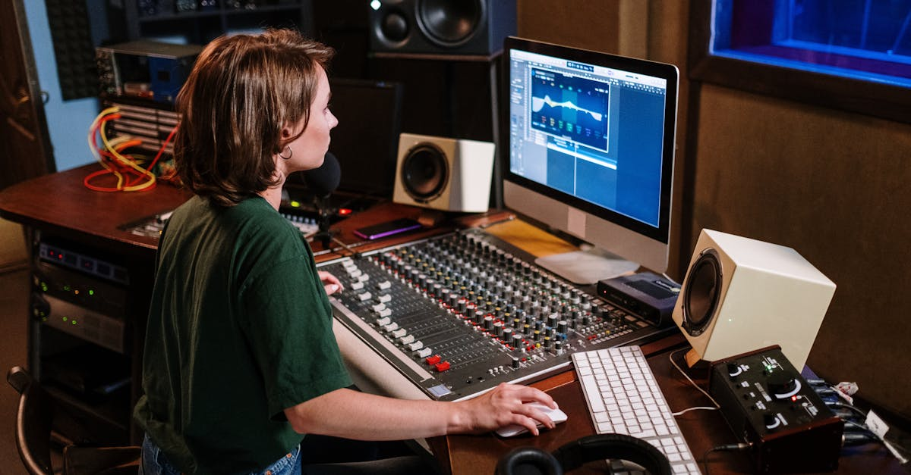

L'Émergence Stupéfiante de la Musique Générée par IA : Quand les Algorithmes Montent sur Scène
L'intelligence artificielle, cette force disruptive qui remodèle tant d'industries, s'attaque désormais avec une vigueur inédite au monde de la musique. Ce qui n'était il y a quelques années qu'une curiosité technologique, une expérimentation audacieuse portée par des pionniers comme Taryn Southern avec son album I AM AI en 2018 ou Holly Herndon et son Proto en 2019, est aujourd'hui une réalité omniprésente. Les algorithmes ne se contentent plus de composer des mélodies rudimentaires ; ils produisent des titres complexes, des orchestrations complètes, voire des imitations vocales troublantes de nos artistes préférés. Les plateformes de streaming, autrefois sanctuaires de la création humaine, voient désormais leurs catalogues submergés par des millions de morceaux générés par IA. Mais cette avalanche numérique soulève une question fondamentale : qui veut vraiment de cette musique algorithmique ?
👉 À lire : Quand l'IA défie les Oscars : Révolution ou Exclusion ?
Cette prolifération rapide n'est pas sans rappeler d'autres domaines où l'IA promet une efficacité et une capacité de production décuplées. Dans le trading de cryptomonnaies, par exemple, des agents IA analysent des téraoctets de données pour identifier des opportunités, exécuter des transactions à la vitesse de l'éclair et gérer des portefeuilles avec une précision quasi-surhumaine. La musique n'est qu'un autre terrain de jeu où les capacités de traitement de données et de reconnaissance de motifs des IA se manifestent de manière spectaculaire. Cependant, la musique, plus que la finance, touche à l'émotion, à l'âme humaine. Peut-on vraiment confier la bande-son de nos vies à des machines, aussi sophistiquées soient-elles ? L'enjeu est bien plus profond qu'une simple question de volume ; il s'agit de la valeur intrinsèque de l'art et de la créativité à l'ère numérique.
👉 À lire : Meta mise sur les humanoïdes : l'IA prend corps, quelles implications ?
L'industrie musicale se retrouve à un carrefour critique, forcée de naviguer entre le potentiel illimité de l'IA et les défis éthiques, juridiques et économiques qu'elle engendre. Des questions de droit d'auteur aux modèles de rémunération des artistes, en passant par la simple définition de ce qu'est un « artiste » ou une « œuvre », tout est remis en question. Cette transformation radicale nous invite à une réflexion collective sur l'avenir de la création et de la consommation culturelle, une réflexion qui, comme nous le verrons, résonne bien au-delà des studios d'enregistrement et des plateformes de streaming, touchant même les marchés financiers les plus innovants.
Au-delà de la Nouveauté : Les Mécanismes et Capacités des IA Musicales
Pour comprendre l'ampleur de cette « inondation » musicale, il est essentiel de saisir comment ces IA fonctionnent. Loin d'être de simples générateurs aléatoires, les systèmes actuels s'appuient sur des modèles génératifs sophistiqués, souvent des réseaux neuronaux profonds entraînés sur des bases de données massives de musique existante. Ces algorithmes apprennent les structures, les harmonies, les rythmes et même les nuances émotionnelles de millions de morceaux créés par des humains. Ils ne se contentent pas de copier ; ils assimilent les règles et les exceptions, les codes et les ruptures qui définissent un genre ou un style.
Le processus est fascinant. Un utilisateur peut fournir une simple instruction textuelle – « compose une ballade rock des années 80 avec une voix féminine mélancolique » – ou même une courte mélodie, et l'IA va générer une œuvre complète, avec des arrangements, des paroles et une production de qualité studio. Certaines IA peuvent même isoler des pistes instrumentales, remixer des chansons existantes ou imiter la voix d'un chanteur avec une ressemblance troublante, comme l'a montré l'affaire du « faux » duo Drake et The Weeknd. Ces capacités ouvrent des portes inédites pour les créateurs, offrant des outils de production à des coûts réduits et une exploration sonore sans précédent. Imaginez un compositeur ayant un orchestre symphonique virtuel à sa disposition, capable d'exécuter n'importe quelle idée en quelques secondes !
« L'IA ne crée pas, elle synthétise. Elle digère notre culture musicale et en recrache une version optimisée, mais est-ce de l'art ? La question est philosophique autant que technique. » – Dr. Élise Dubois, chercheuse en IA créative (citation fictive)
Cependant, cette prouesse technique soulève un débat ardent sur la nature de la créativité. L'IA est-elle véritablement créative, ou n'est-elle qu'un perroquet ultra-performant, capable de recombinaisons complexes mais dénuées d'intention, d'expérience vécue ou d'âme ? Pour de nombreux puristes, l'essence de l'art réside dans l'expression unique d'une conscience. L'IA, malgré son intelligence, ne possède pas de conscience au sens humain. Elle ne ressent pas la joie, la douleur ou l'inspiration. Elle calcule. Cette distinction est cruciale car elle touche à la valeur que nous accordons à l'œuvre. Une mélodie générée par un algorithme peut être agréable à l'oreille, mais peut-elle nous émouvoir de la même manière qu'une chanson née du cœur d'un artiste ? La réponse à cette question déterminera en grande partie l'avenir de la musique générée par IA et sa place dans notre paysage culturel.
La Démocratisation de la Création ou la Dilution de l'Art ?
L'un des arguments les plus souvent avancés en faveur de la musique générée par IA est sa capacité à démocratiser la création. Soudain, n'importe qui, sans connaissances musicales approfondies ni équipement coûteux, peut produire une chanson. Un rappeur en herbe peut générer des instrumentaux sur mesure, un cinéaste indépendant peut créer une bande-son originale sans budget astronomique, et même un amateur peut expérimenter la composition. Cette accessibilité est une aubaine pour l'innovation, permettant à une multitude de nouvelles voix et de nouveaux styles d'émerger, contournant les barrières traditionnelles de l'industrie. C'est une ère où le talent n'est plus le seul prérequis, l'outil technologique devenant un puissant catalyseur.
Pourtant, cette démocratisation a son revers : la dilution de l'art. Si tout le monde peut être un « artiste » par procuration algorithmique, quelle est la valeur de l'œuvre ? Le risque est une saturation du marché, où la quantité éclipse la qualité et l'originalité. Les plateformes de streaming pourraient se transformer en de vastes dépotoirs numériques, où les créations humaines peinent à se distinguer au milieu d'un océan de productions générées par des machines. Imaginez des millions de « chansons d'ambiance » ou de « musiques de fond » parfaitement fonctionnelles mais dénuées de toute étincelle. Le danger n'est pas seulement pour les artistes professionnels, dont les revenus sont déjà maigres, mais aussi pour le public, qui pourrait se lasser de cette homogénéisation sonore.
- Avantages potentiels :
- Accès facilité à la production musicale pour tous.
- Réduction des coûts de production pour les créateurs.
- Exploration de nouveaux genres et de sonorités inédites.
- Outil d'aide à la composition pour les musiciens.
- Inconvénients majeurs :
- Saturation du marché et difficultés de découverte.
- Dévalorisation de la création artistique humaine.
- Questionnement sur l'originalité et l'authenticité de l'œuvre.
- Pressions économiques accrues sur les artistes traditionnels.
« La technologie est un amplificateur. Elle peut amplifier le génie comme la médiocrité. La question n'est pas si l'IA peut créer, mais si ce qu'elle crée a un sens pour nous, humains, » souligne avec pertinence un article de fond du magazine Wired France. Cette tension entre l'opportunité et le risque est palpable. Si l'IA peut libérer la créativité en fournissant des outils puissants, elle peut aussi, paradoxalement, la noyer sous un flot de contenu générique. Le défi sera de trouver un équilibre, de distinguer l'innovation véritable de la simple automatisation, et de valoriser l'apport humain dans un monde de plus en plus algorithmique. La survie de l'art, tel que nous le connaissons, pourrait bien dépendre de notre capacité à naviguer cette nouvelle frontière.

Enjeux Éthiques, Juridiques et Économiques : Le Labyrinthe du Droit d'Auteur à l'Ère de l'IA
L'arrivée massive de la musique par IA ne bouleverse pas seulement la création ; elle met à rude épreuve les cadres éthiques, juridiques et économiques établis depuis des décennies. La question centrale est celle du droit d'auteur. Qui détient les droits sur une œuvre générée par une IA ? Est-ce l'opérateur de l'IA, le développeur de l'algorithme, ou l'IA elle-même (hypothèse peu probable en l'état actuel du droit) ? Et qu'en est-il des artistes dont les œuvres ont servi de base d'apprentissage à ces IA ? Les modèles génératifs sont entraînés sur des millions de morceaux existants, souvent sans le consentement explicite des créateurs originaux ni rémunération. C'est une zone grise juridique immense, potentiellement explosive.
Le débat fait rage. Certains soutiennent que l'entraînement d'une IA relève du « fair use » (utilisation équitable), car l'IA ne reproduit pas directement mais « apprend » des styles. D'autres, comme l'artiste Grimes, qui a proposé de partager les royalties de toute chanson générée par IA utilisant sa voix, reconnaissent la valeur de l'original mais cherchent des solutions innovantes. Le problème est complexe : si l'on devait rémunérer chaque artiste dont l'œuvre a contribué à l'entraînement d'une IA, la tâche serait titanesque et économiquement insoutenable pour les développeurs. Pourtant, ignorer la contribution des créateurs originaux reviendrait à saper les fondements mêmes de la propriété intellectuelle.
« Le droit d'auteur, tel que nous le connaissons, a été conçu pour l'esprit humain. Il est illusoire de penser qu'il peut s'appliquer sans adaptation majeure à la créativité algorithmique. Nous sommes face à un vide juridique qu'il est urgent de combler. » – Me Sophie Duval, avocate spécialisée en propriété intellectuelle (citation fictive)
Les enjeux économiques sont tout aussi vertigineux. Si les productions IA deviennent la norme, quel sera l'impact sur les revenus des artistes humains ? Les maisons de disques et les plateformes de streaming seront-elles tentées de privilégier le contenu généré à moindre coût, réduisant encore la part du gâteau pour les musiciens ? La prolifération des « deepfakes » musicaux, où la voix d'un artiste est imitée sans son accord, pose également de graves problèmes de droit à l'image et d'usurpation d'identité. Ces défis ne sont pas propres à la musique ; ils résonnent dans le monde de l'art visuel, de la littérature, et même, par analogie, dans le domaine financier où la propriété des données, la transparence des algorithmes et la protection des investisseurs deviennent des préoccupations majeures face à l'automatisation croissante. La nécessité d'un cadre réglementaire clair et équitable n'a jamais été aussi pressante, non seulement pour protéger les créateurs, mais aussi pour garantir une innovation responsable et éthique.
Le Spectre de la Saturation : Quand les Plateformes de Streaming Deviennent des Océans d'Algorithmes
Les plateformes de streaming musical, comme Spotify, Apple Music ou Deezer, sont les premières lignes de front de cette révolution. Conçues pour offrir un accès illimité à la musique, elles sont désormais confrontées à un défi existentiel : comment gérer un afflux potentiellement infini de contenu généré par IA ? La promesse d'une bibliothèque universelle risque de se transformer en un océan de bruit numérique, où le « signal » – la musique authentique et innovante – est noyé par le « bruit » – des millions de pistes générées automatiquement, souvent de qualité moyenne, conçues pour capter l'attention ou remplir des niches spécifiques (musique pour dormir, pour étudier, pour les jeux vidéo).
Le problème de la découverte devient alors crucial. Comment les utilisateurs pourront-ils trouver ce qu'ils aiment vraiment quand leur fil de recommandations est potentiellement pollué par du contenu algorithmique ? Les algorithmes de recommandation, qui sont déjà des IA, devront devenir encore plus sophistiqués pour distinguer l'œuvre originale et significative des imitations ou des productions de masse. Cela pourrait créer des bulles de filtrage encore plus prononcées, où les utilisateurs n'entendent que ce que les algorithmes pensent qu'ils veulent entendre, sans jamais être exposés à de nouvelles pépites humaines.
- Impact sur les utilisateurs :
- Difficulté accrue à découvrir du contenu original.
- Risque de lassitude face à l'homogénéisation des sons.
- Interrogation sur l'authenticité des artistes et des œuvres écoutées.
- Impact sur les plateformes :
- Coûts de stockage et de modération potentiellement explosifs.
- Nécessité de développer des systèmes de détection d'IA toujours plus performants.
- Pression sur les modèles économiques basés sur les écoutes et les royalties.
« Le risque n'est pas que l'IA supprime la musique, mais qu'elle la rende insignifiante, un simple fond sonore générique pour nos vies hyper-connectées, » avertit un expert en tendances numériques lors d'une récente conférence sur l'avenir du streaming. Les modèles économiques actuels des plateformes, qui rémunèrent les artistes en fonction du nombre d'écoutes, pourraient être complètement déstabilisés. Si des millions de pistes IA sont produites à faible coût et génèrent des écoutes massives, la part des royalties revenant aux artistes humains pourrait s'effondrer. Cela force les plateformes à repenser leurs stratégies, à investir massivement dans la détection de l'IA et à potentiellement adapter leurs systèmes de rémunération pour préserver la valeur de la création humaine. L'avenir du streaming ne dépendra pas seulement de la technologie, mais aussi de notre capacité collective à définir ce qui a de la valeur dans un monde où tout peut être généré.

L'IA dans la Musique : Une Leçon pour l'Écosystème Crypto et Financier ?
L'onde de choc provoquée par l'IA dans l'industrie musicale, bien que spécifique à son domaine, offre des leçons précieuses pour d'autres secteurs, notamment celui de la finance et du trading de cryptomonnaies, où l'automatisation et l'analyse algorithmique sont déjà monnaie courante. Les parallèles sont frappants et méritent notre attention, surtout pour ceux qui évoluent dans l'univers de CryptoMind AI.
Premièrement, la dépendance aux données. Tout comme les IA musicales sont entraînées sur des millions de morceaux existants, les agents IA de trading s'appuient sur des quantités colossales de données de marché historiques, de flux d'actualités, d'indicateurs économiques et de sentiments sociaux pour identifier des patterns et prédire des mouvements. La qualité et l'intégrité de ces données d'entraînement sont absolument critiques. Une IA musicale mal entraînée produira de la cacophonie ; un agent de trading mal calibré ou basé sur des données biaisées pourrait entraîner des pertes catastrophiques.
Deuxièmement, la question de l'automatisation versus l'intuition humaine. Si l'IA peut composer des mélodies, peut-elle capturer l'âme d'une œuvre ? De même, si les algorithmes de trading peuvent exécuter des stratégies complexes à des vitesses impossibles pour un humain, peuvent-ils vraiment saisir les nuances imprévisibles du sentiment de marché ou anticiper un « cygne noir » avec la même flexibilité qu'un trader expérimenté ? L'IA excelle dans l'analyse logique et la rapidité, mais l'intuition, la créativité et la capacité à s'adapter à l'inattendu restent des atouts humains précieux, que ce soit en studio ou sur les marchés financiers.
- Parallèles essentiels :
- Qualité des données : Cruciale pour l'entraînement de l'IA musicale et des agents de trading.
- Éthique et transparence : Qui est responsable des œuvres (musique) ou des décisions (trading) de l'IA ?
- Saturation du marché : Danger de contenu générique (musique) ou de signaux de trading sur-optimisés (finance).
- Valeur de l'humain : L'intuition artistique face à l'analyse algorithmique.
Enfin, les défis éthiques et réglementaires. Dans la musique, le droit d'auteur et la rémunération sont en jeu. Dans la finance, la transparence des algorithmes, la prévention de la manipulation de marché et la protection des investisseurs sont des préoccupations majeures. Comment assurer l'équité quand des IA puissantes opèrent sur les marchés ? Comment éviter que l'IA ne reproduise ou n'amplifie les biais humains ? L'expérience de la musique IA nous rappelle que toute innovation technologique majeure, aussi prometteuse soit-elle, doit être accompagnée d'une réflexion profonde sur ses implications sociales, éthiques et économiques. Le succès des agents IA dans le trading crypto ne dépendra pas seulement de leur performance technique, mais aussi de notre capacité à construire des cadres robustes qui garantissent la confiance, la transparence et la responsabilité dans cette nouvelle ère numérique.
Conclusion : L'Harmonie du Futur : Coexistence ou Confrontation ?
L'arrivée massive de la musique générée par IA sur les plateformes de streaming n'est pas un simple fait divers technologique ; c'est un symptôme de la transformation profonde que l'intelligence artificielle est en train d'opérer dans toutes les sphères de notre société. De la création artistique aux décisions financières, l'IA redéfinit les règles du jeu, promettant une efficacité et une capacité de production sans précédent, mais soulevant également des questions fondamentales sur la valeur de l'humain, l'éthique de la création et la justice économique.
Le futur de la musique, comme celui de bien d'autres industries, ne résidera probablement pas dans une confrontation stérile entre l'humain et la machine, mais plutôt dans une coexistence réfléchie et une collaboration intelligente. L'IA peut être un outil puissant au service des artistes, un amplificateur de créativité, un assistant pour les tâches répétitives. Elle peut libérer les créateurs pour qu'ils se concentrent sur l'essence de leur art. Mais pour cela, des cadres clairs sont indispensables : des lois sur le droit d'auteur adaptées à l'ère numérique, des modèles de rémunération équitables et des plateformes de streaming qui valorisent la qualité et l'originalité, qu'elle soit humaine ou augmentée par l'IA.
« L'IA n'est pas l'ennemi de l'art, ni de l'innovation financière. Elle est un miroir, un catalyseur qui nous force à réévaluer ce qui nous rend uniques, ce qui a de la valeur, et ce que nous voulons préserver dans notre avenir. » – Propos tenus par un analyste de CryptoMind AI (citation fictive)
L'expérience de la musique par IA est une mise en garde et une opportunité. Elle nous rappelle que le progrès technologique n'est pas une fin en soi, mais un moyen. Le véritable enjeu est de savoir comment nous, en tant que société, choisirons d'utiliser ces outils. Voulons-nous un monde où l'art est une commodité générique, ou un monde où l'IA nous aide à explorer de nouvelles dimensions de la créativité humaine ? Voulons-nous des marchés financiers entièrement automatisés et opaques, ou des systèmes augmentés par l'IA mais guidés par des principes de transparence et d'équité ? La réponse à ces questions façonnera non seulement le paysage sonore de demain, mais aussi l'économie et la société tout entière. La symphonie du futur est encore en cours de composition, et chaque acteur, qu'il soit artiste, développeur, régulateur ou simple consommateur, a un rôle à jouer dans sa création.